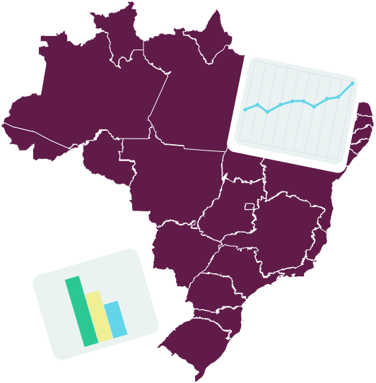
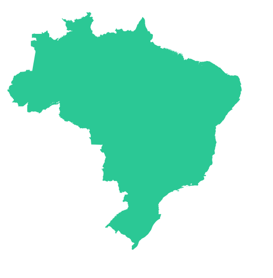
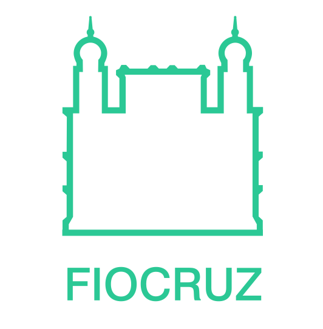

A primeira iniciativa de fomento para abertura de dados governamentais se deu a partir do Plano de Ação Nacional sobre Governo Aberto (Decreto s/nº de 15 de setembro de 2011), criado para incremento da transparência e do acesso à informação pública. As medidas estavam respaldadas na Constituição Federal, a qual estabelece que a administração pública tem a responsabilidade de fazer a gestão da documentação governamental e viabilizar o acesso dos usuários a registros administrativos e a informações sobre atos de governo.
Aula 2
Cenário Brasileiro
Há uma importante lacuna entre o cenário internacional e a realidade brasileira. A despeito de especificidades dos países, o cenário internacional indica que a transição do modelo atual de produção do conhecimento rumo à uma ciência pautada na colaboração e comprometimento social se dá pela composição de um ecossistema de pesquisa institucionalizado que envolve e responsabiliza todos os atores. Nesse sentido, diversos países adotam a Ciência Aberta desde uma visão estratégica e de longo prazo, que visa aumentar a competitividade e a sua capacidade de inovar.
No Brasil, não há até o momento uma política pública nacional mandatória de Ciência Aberta. Nem mesmo, o Acesso Aberto - movimento iniciado há mais de 15 anos e consolidado globalmente - é objeto de política pública nacional em nosso país. Por outro lado, registra-se o crescimento de iniciativas nesta direção, oriundas de agentes de fomento, universidades e institutos, destacando-se a Fapesp e a sua recente exigência do Plano de Gestão de Dados como requisito para submissão de propostas a seus editais.
Na Fiocruz, por exemplo, a Ciência Aberta vem sendo construída e consolidada desde a instituição de sua Política de Acesso Aberto ao Conhecimento, de caráter mandatório para artigos, teses e dissertações em 2014. Em 2018, a instituição formulou o Termo de Referência Gestão e Abertura de Dados para Pesquisa com um conjunto inicial de diretrizes para estimular um debate, coletivo e democrático, sobre a gestão, compartilhamento e a abertura dos dados para pesquisa na instituição de forma responsável, observando os aspectos éticos, legais e normativos que possam representar a necessidade de sigilo.
Saiba mais:
- Infográfico sobre Política de Acesso Aberto ao Conhecimento da Fiocruz
- Infográfico sobre a produção do conhecimento científico, os interesses envolvidos e o movimento pelo Acesso Aberto
Histórico brasileiro
Abaixo, um breve resgate histórico lista momentos importantes para o entendimento do processo de implantação da abertura de dados no Brasil - campo no qual as ações de Governo Aberto foram pioneiras. Em 2011, debates importantes no campo da administração pública nacional ganham institucionalidade através da Lei de Acesso à Informação (LAI) e o Brasil é um dos fundadores da Parceria para o Governo Aberto (Open Government Partnership, OGP em inglês)
Atualmente, a publicação de dados abertos é valorizada mundialmente em diversos campos de atuação (governamental, social e acadêmico) por promover maior transparência, eficiência e efetividade de serviços, além de possibilitar a inovação e a mensuração de impacto de políticas públicas. Porém, este recurso ainda é pouco explorado por muitos países.
O Brasil é uma liderança do movimento pelo Governo Aberto que adota princípios como accountability (prestação de contas e responsabilização), participação social, transparência, tecnologia e inovação em um novo modelo de interação político-administrativo que" prioriza os cidadãos nas políticas públicas.

Importante:
O Sistema Eletrônico do Serviço de Informações ao Cidadão (e-SIC) permite que qualquer pessoa, física ou jurídica encaminhe pedidos de acesso à informação, acompanhe o prazo e receba a resposta da solicitação realizada para órgãos e entidades do Executivo Federal.
O Portal Brasileiro de Dados Abertos é uma ferramenta do governo que funciona como um catálogo para facilitar a busca e uso de dados publicados pelos órgãos do governo.
Linha do Tempo
O Quadro a seguir apresenta a linha do tempo das principais ações para implementação da abertura de dados governamentais no Brasil.
Nov 2011
Lei de Acesso à Informação (LAI)
Abr 2012
Criação da INDA
Mai 2016
Politica de Dados Abertos do Poder Executivo Federal
Dez 2016
3º Plano de Ação Brasileiro para Governo Aberto
Ago 2018
Lei Geral de Proteção de Dados Pessoais (LGPDP)
Out 2018
4º Plano de Ação Brasileiro para Governo Aberto
Iniciativas
Embora as políticas de Ciência Aberta e abertura de dados para pesquisa sejam recentes no mundo, o Brasil já dispõe de iniciativas importantes que orientam políticas institucionais para a abertura de dados governamentais. Com relação aos dados para pesquisa, carecemos ainda de políticas específicas. Algumas iniciativas são:

No Brasil
Manifesto de Acesso Aberto a Dados da Pesquisa Brasileira
Lançado pelo Instituto Brasileiro de Informação em Ciência e Tecnologia (Ibict), estimula a adoção da Ciência Aberta no Brasil, em especial reivindicando amplo e irrestrito acesso a fontes primárias de pesquisa utilizadas por pesquisadores e outros segmentos sociais.
Edital sobre Acesso Aberto a dados de pesquisa (AADP)
Promovido pela Rede Nacional de Ensino e Pesquisa (RNP) e o Ibict, está financiando o projeto de pesquisa da Rede de Dados de Pesquisa Brasileira (GT-RDP Brasil), da Universidade Federal do Rio Grande do Sul (UFRGS), para identificar práticas, mapear requisitos e prototipar um sistema que facilite o compartilhamento de dados científicos.
Plataforma Aquarius
Plataforma para Gestão de Informação Estratégica em Ciência, Tecnologia e Inovação desenvolvida pelo Ministério de Ciência, Tecnologia, Inovação e Comunicação (MCTIC) visa promover maior transparência dos investimentos públicos em CT&I e aprimorar a política de acompanhamento e monitoramento dos programas e ações do ministério.
Sala de Apoio à Gestão Estratégica (SAGE)
O Ministério da Saúde disponibiliza informações para a tomada de decisão, a gestão e a geração de conhecimento.

Na Fiocruz
Política de Acesso Aberto ao Conhecimento da Fiocruz
A Política de Acesso Aberto ao Conhecimento da Fiocruz (Portaria nº 329/2014) objetiva garantir à sociedade o acesso gratuito, público e aberto ao conteúdo integral de toda obra intelectual produzida pela instituição através do repositório Arca.
Plano de Dados Abertos (PDA)
Apresenta as orientações para abertura de dados na instituição, definindo os padrões e o alinhamento dos processos de publicação dos dados na internet, de acordo com as metodologias e as boas práticas da transparência na Administração Pública.
Grupo de Trabalho em Ciência Aberta da Fiocruz (GTCA)
Coordenado pela Vice-Presidência de Educação, Informação e Comunicação (VPEIC) e viabilizado pela “Plataforma de Vigilância de longo prazo para zika vírus e microcefalia no âmbito do SUS”, o GTCA realiza estudos que subsidiam propostas de diretrizes e estratégias para implantação da Ciência Aberta pela instituição, com foco na abertura de dados para pesquisa em saúde.